Projections of molecules in Blender
Here, I will walk through the process of making an animation similar to the one found at https://twitter.com/Jules_Oppenheim/status/1597229519332864001
1) Download the latest version of Blender from https://www.blender.org/download/
For this particular animation, we will need to install the experimental Blender version 3.4.0 or newer. This is because we will be using a new type of geometry node called “Self Object” that has been introduced in version 3.4.0.
When working with Blender experimental versions, remember to save often as it may crash.
2) Go to Edit->Preferences and add the “Import-Export: Atomic Blender PDB/XYZ” add-on.
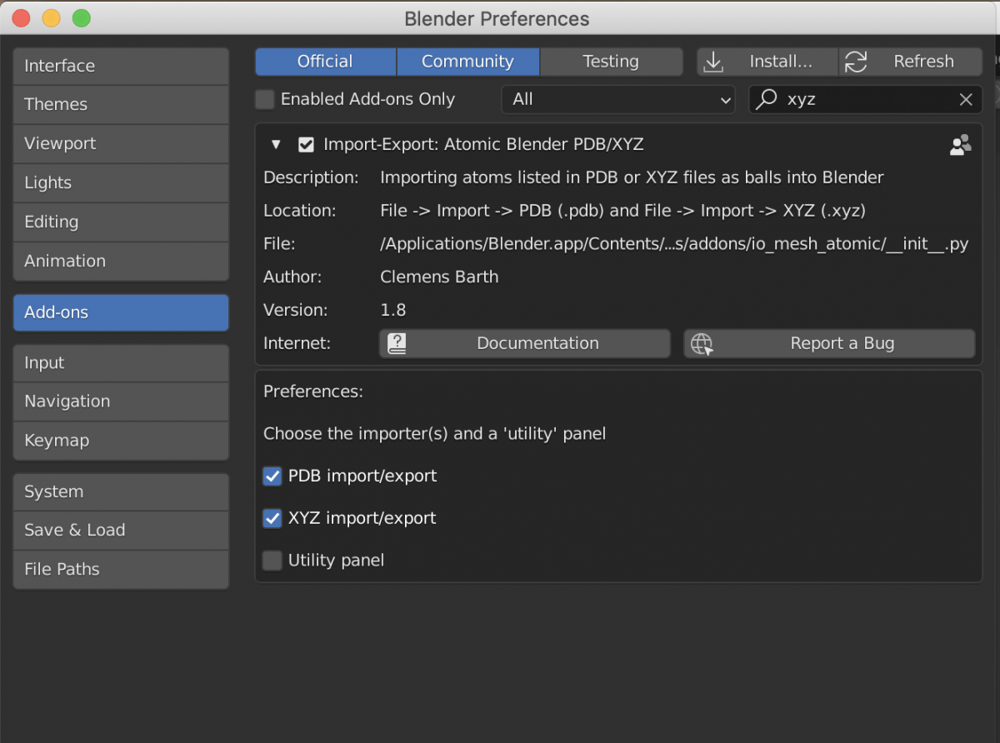
3) Go to File -> Import -> .xyz.
For generating a .xyz file for a periodic structure, I typically open a .cif file in VESTA and go to File -> Export Data and save as a .xyz. In VESTA, you can press “Boundary” to change the number of unit cells that you would like to include.
4) Select “Mesh” for the atom type and then Import the .xyz file
You should now be able to see the .xyz file in the viewport
In this example, I am using 1 unit cell of MIL-88b
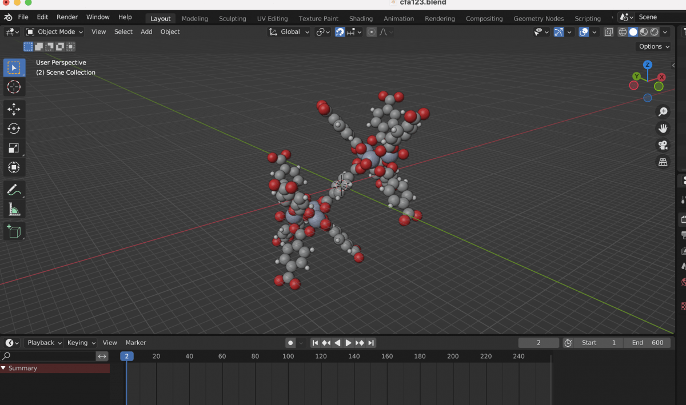
5) It is now important to understand how the molecule is interpreted by Blender when we tell it that the atoms should be a mesh.
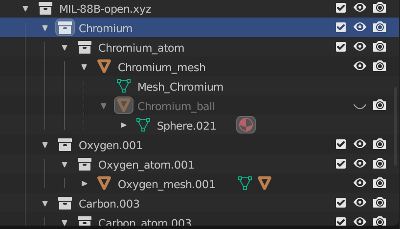
In the scene collection tab on the right side of the screen, we can see that there is a collection for the molecule. This heirarchy contains one subcollection for each atom type, in this case there is a collection for chromium, oxygen, carbon, and hydrogen. For each of these atom types, there is a parent mesh, such as Chromium_mesh, which contains another geometry, such as Chromium_ball. Press the closed eye on the right side of the tab for Chromium_ball in order to be able to see and select to object in the view port.
The Chromium_mesh is a series of vertices, each at the location of a chromium atom. The Chromium_ball is the geometry of the object that is placed at each of the vertices of the Chromium_mesh. So if we make the Chromium_ball any arbitrary shape, then each of the chromium atoms in the scene will look like and adopt the material type of that object
For example, I have changed the geometry of Chromium_ball to a monkey’s head, and each of the chromium atoms in the scene have changed to a monkey.
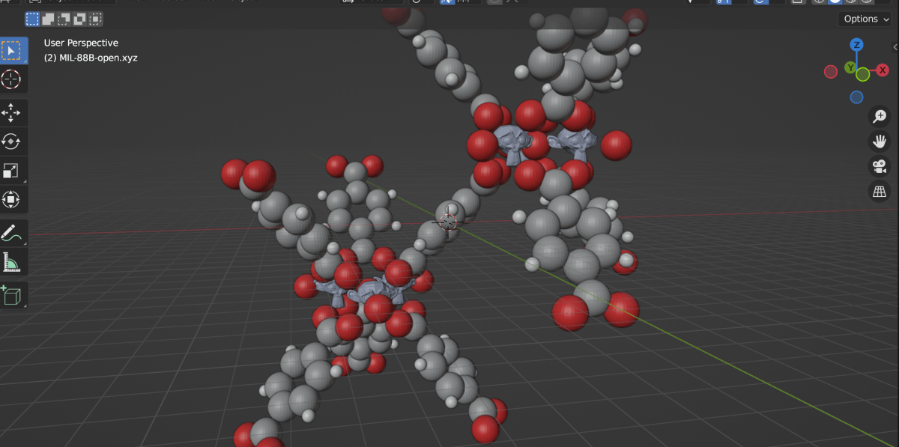
6) What we want to do is to change the geometry of the Chromium ball such that when the atom is above the xy plane (z coordinate > 0) then the atom looks as it should, but when the atom crosses beneath the xy plane, it should be projected up onto the plane.
In order to accomplish this, we will be using Geometry Nodes. This allows us to build up a logic tree that accomplishes the plan.
7) Before that, we need to add two objects to the scene.
First, we will add a bounding box for the atoms. If the atoms cross out of this box, then they will disappear. Press “Shift-A” and add a cube to the scene. With the cube selected, press “s 100” to scale the cube 100 times. Then press “g z 100” to translate the cube in the Z-direction by 100 units. In the right tab, press the eye and the camera to hide this cube in the viewport and in renders.
Second, we will add a short cylinder which will be the projected sphere. Press “Shift-A” and add a cylinder to the scene. Press “s z 0.1” to scale the height down by a factor of 10. In the right tab, press the eye and the camera to hide this cube in the viewport and in renders.
8) Change the bottom panel from “Timeline” to the “Geometry Node Editor”
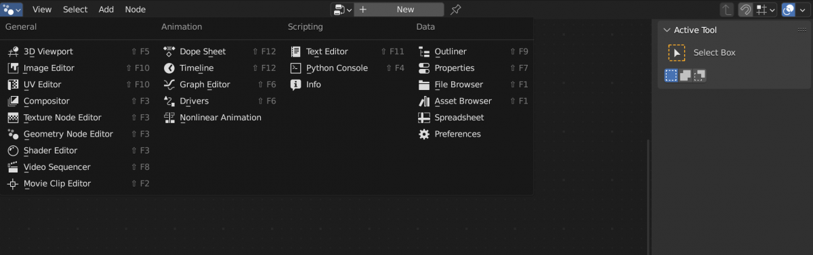
9) Select the Chromium_ball and then press “New” in the “Geometry Node Editor”
10) We will now build the logic tree. Press “shift-A” to bring up a window that allows us to add nodes
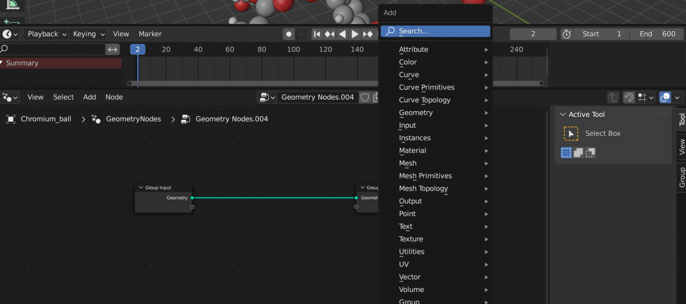
11) Build the following logic tree
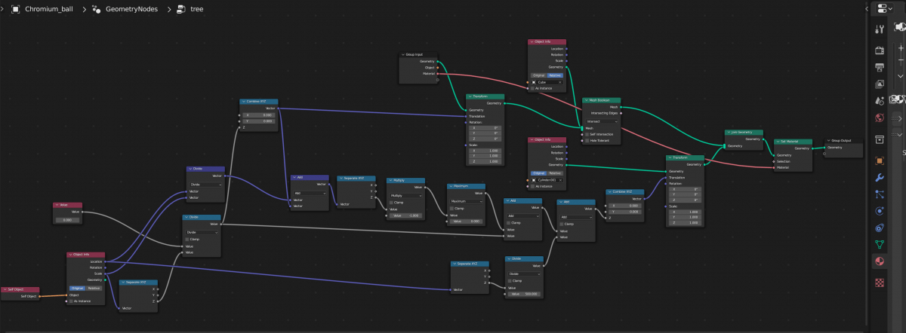
To briefly explain the logic. We are combining geometries in different ways and feeding them into the “Group Output”, which is what you will see in the viewport. The core of the logic is at the very top in the green colored nodes. We take the “Group Input”, which is each individual atomic sphere, and combine it with the cube using a “Mesh Boolean” set to intersect. This will clip the sphere if it passes outside of the bounding box. The sphere is then combined with the cylinder using a “Join Geometry” in such a way that if the sphere is inside the bounding box, then the cylinder will remain inside the sphere and be undetectable and if the sphere exits beneath the bounding box, then the cylinder will sit at the bottom of the box. The rest of the nodes takes care of calculating the location of the cylinder and accounting for the scale of the sphere.
An important note is that the “Value” at the very left side will control the height of the molecule. Later on we will animate this value.
12) In the “Modifier Properties” tab on the right side of the screen select “Chromium_ball” for the object and “Chromium” for the material. It is important to do this step before we make instances real later on.
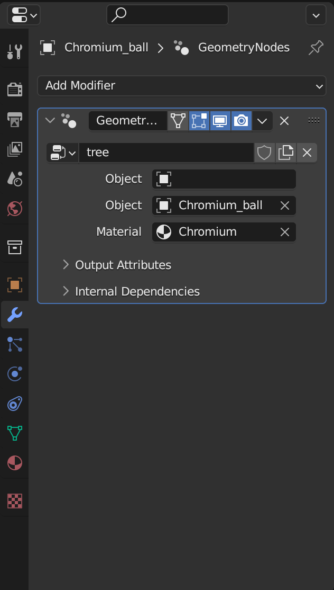
13) Select the “Chromium_mesh” and then press “Object -> Apply -> Make Instances Real”. This will convert each of the vertices from the “Chromium_mesh” into actual instances of the “Chromium_ball”.
Now we can hide the original “Chromium_mesh” and “Chromium_ball” by pressing the eye and the camera in the right collections tab.
Then, select each of the new “Chromium_ball.#” instances (in the right tab click the top one, press shift, and click the bottom one), and press “command-A”, “Apply Rotation”, then in the top bar press “Object -> Set Origin -> Origin to center of mass (volume)”. (Note sometimes you have to unclick and reclick the instances for this to work)
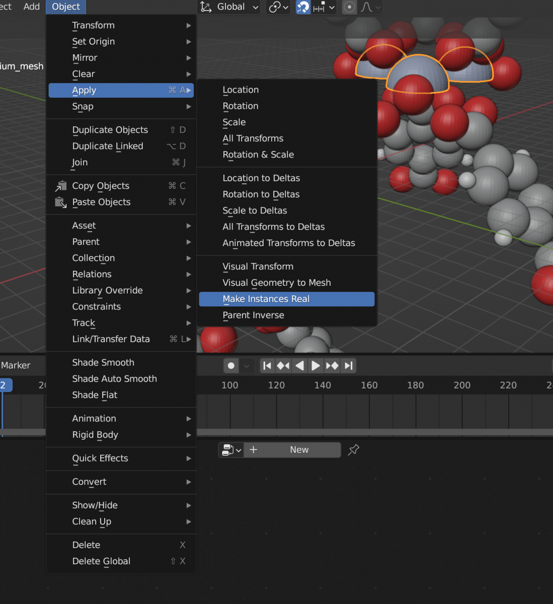
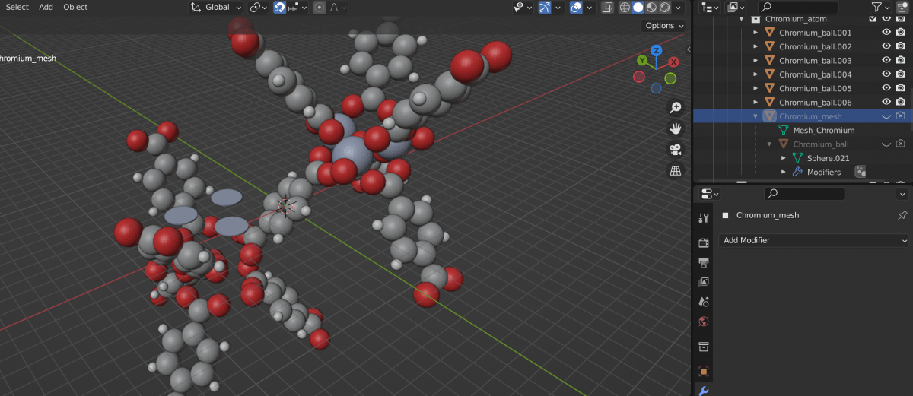
14) At this point, we have successfully modified the chromium atoms and it is now time to repeat this process for the other elements.
Follow this procedure for each element
- Press the eye to view the atom_ball
- In the “Modifier Properties” tab on the right side of the screen, add a “Geometry Nodes” modifier
- Select the Geometry Node from the drop down menu
- Select the atom ball type for “Object” and the atom material type for “Material”
- Select the atom_mesh
- Make the instances real
- Hide the original atom_mesh and atom_ball
- Apply rotation transforms to the new instances and set the origin to the center of mass
If successful, the molecule should look somewhat like this
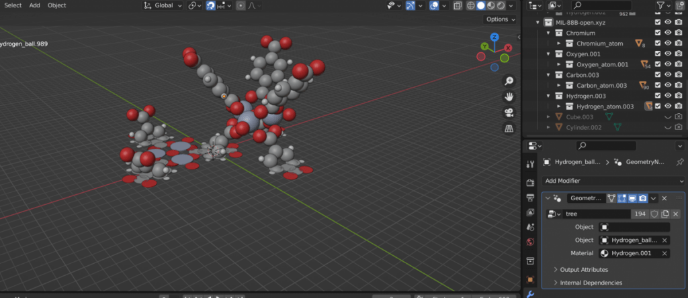
15) We can now make the animation
Right-click the horizontal divide between the viewport and the “Geometry Node Editor” to add another horizontal split and pull up the “timeline”
Set the maximum number of frame, the number could be 50 or 100.
Go to frame 1 and change the value of the “Value” geometry node until the entire molecule is above the xy plane (in this example, I have set it to 15), then with the cursor hovering above the number press “i” to add a key frame. The number should now be highlighted yellow.
Go to the last frame (press “shift-right arrow”) and change the value of the node until the entire molecule has been projected down (in this example, I have set it to -15), then with the cursor hovering above the number press “i” to add a key frame. The number should change from orange to yellow.
16) We can now setup the camera
Press “shift-A” and add a camera. Move the view to somewhere you like and press “View -> Align View -> Align active camera to view”
Then “View -> Navigation -> Walk navigation” and move the camera somewhere that encompassess the molecule throughout the entire animation (you could alternatively use key frames to move the camera between multiple locations throughout the shot).
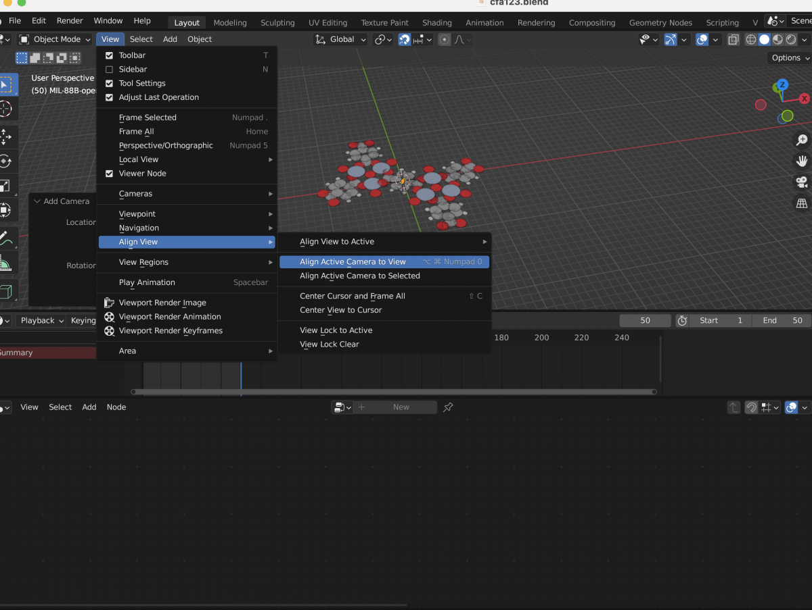
17) Setup the lighting
You can either add lights to the scene or apply an HDRI environmental texture (as described here /blog/3d-animations-dft-trajectories-blender.html)
I prefer to use “Area lights” if using lights, and using multiple lights from different angles will make the scene look better.
18) Setup the “Render Properties”
Cycles will look more photorealistic than Eevee, you only need 4-20 max samples for cycles.
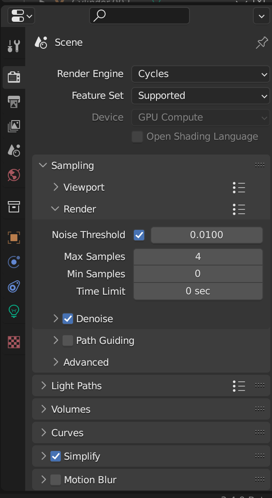
19) Setup the Output properties
We will output to .png files (using RGBA) and then build a movie in post-processing
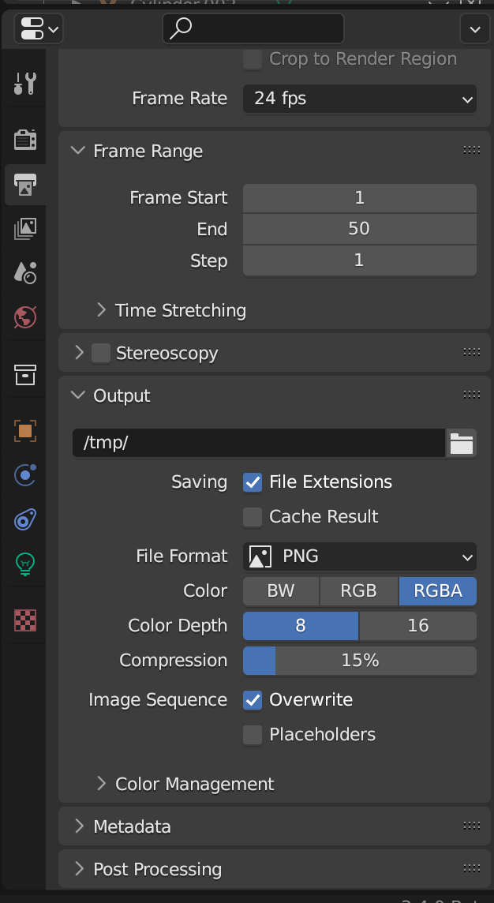
20) Setup the materials properties
Optionally, use the Shader Editor to change the colors and properties of each atom type. As an example, I will make the chromium atoms emissive and the other atoms highly specular
21) Press ‘A’ to select all the atoms, right click, and ‘Shade Auto Smooth’
22) Remember to save. Do it before rendering
23) Render the animation (“Render -> Render Animation”)
24) Open the “Video Editor” tab
Double the number of frames (here I’m going from 50 to 100)
“Add -> Image/Sequence” and select the rendered frames
Press “shift-D” and “g 50” to duplicate and shift forward 50 frames
Select the second set of frames and press “Video -> Reverse Frames”
Put both sets of image sequences in Channel 2
In channel 1, “Add -> Color” and add 101 frames
Set the color to either white or black
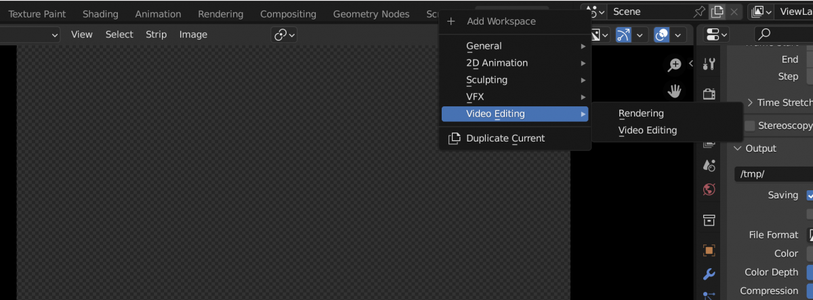
Under “Output Properties”, change the file format to “FFmpeg video” and in the drop down select “H264 in MP4”
Save
Then “Render Animation” to make a .mp4 file
Alternatively, you can rerender these as .png files and use a separate software to make a .gif. I typically use the free software GIMP to generate .gif files
25) Enjoy watching the animation!
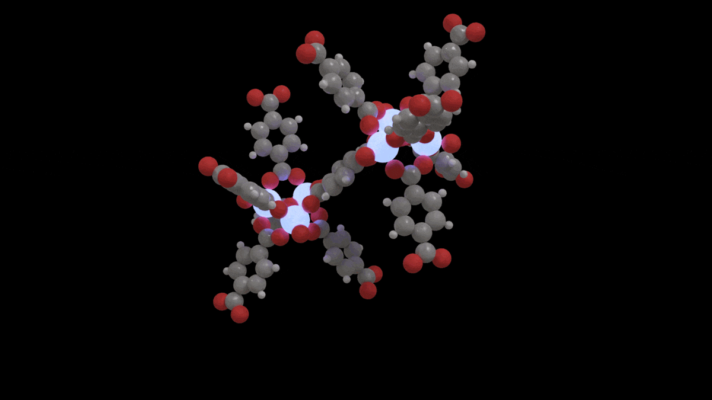